This lab was completed on February 19, 2023.
Overview
In this lab, I learned how to solder. I only had minor past experiences with soldering beforehand. Soldering is a technique to connect two pieces of metal together by melting another metal/alloy (solder) between them. Solder has a much lower melting point than the copper wires or components that I connected with it, so the parts were not damaged by the hot solder.
Materials
The materials used for this lab were:
↠ Arduino (Elegoo) Uno R3 Controller Board
↠ USB Cable
↠ USB Adapter (if you have a USB-C-only laptop)
↠ Button
↠ Breadboard Jumper Wire
↠ Resistors
↠ LEDs
↠ Multimeter
↠ Protoboard (Not in the kit; provided)
↠ Stranded and Solid-core Wires (Not in the kit; provided)
↠ Soldering Iron (BTU Lab supplied)
↠ Solder Wire (Lead-free, rosin core) (BTU Lab supplied)
↠ Fume Extractor (BTU Lab supplied)
↠ Brass Wire Pad (BTU Lab supplied)
↠ Soldering Helping Hands (BTU Lab supplied)
↠ Solder Sucker Desoldering Pump (BTU Lab supplied)
↠ Solder Wick (BTU Lab supplied)
↠ Wire Stripper (BTU Lab supplied)
↠ Diagonal Pliers (BTU Lab supplied)
↠ Safety Glasses (BTU Lab supplied)
Part 1: Soldering Setup and Safety
For the first part of this lab, I worked entirely in the ATLAS Department's Blow Things Up (BTU) Lab (CU Boulder). The BTU has four soldering stations. In order to start soldering, I had to set up the tools and equipment. A photo of my equipment is shown below.
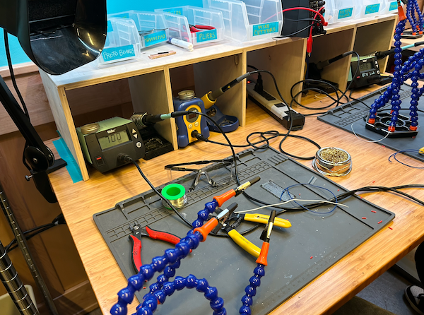 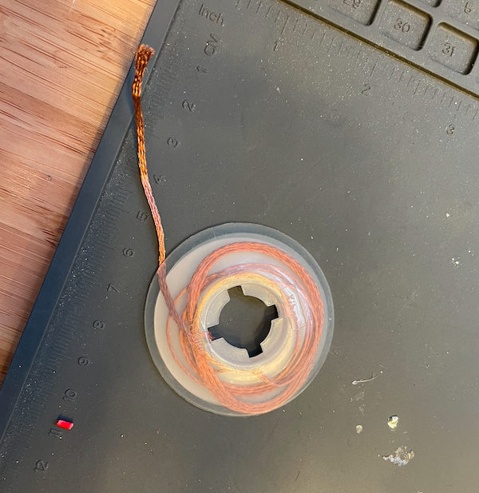Once all my tools were assembled, I set up the soldering station, and first started by turning the soldering iron on. The appropriate temperature for the soldering iron is between 600 - 700 ºF. When the soldering iron is on, I needed to be careful while handling the iron. The tip of the iron is too hot to touch, and so it was important to only hold it by the handle. I also needed to always store the soldering iron in the stand only, and not rest it anywhere else as it would burn through the material it rested on.
Once the soldering iron is on, I had to turn on the fume extractor fan because solder contains harmful chemicals and metals (such as lead). Ventilation and filtration is needed so that I did not inhale the harmful chemicals in the fumes. Another important safety precaution that I had to complete was to wash hands with soap and water after soldering because the chemicals can get on your hands as well.
The last safety precaution that I had to take was to make sure that I was wearing safety glasses to protect my eyes from solder droplets or metal particals that could get suspended in the air.
Part 2: Soldering Wires to Protoboard
In this lab, I used a protoboard, which is used for electrical prototyping similar to a breadboard, but can be soldered on. One difference between the breadboard and the protoboard is that all the pins (holes) in the protobard are disconnected from each other.
In this part of the lab, I used two types of wires, solid-core and stranded.
The first thing that I had to do after turning on the soldering iron and heating it up was to tin and clean the iron. Tinning is the method of cleaning the soldering iron by melting and depositing solder over the tip of the soldering iron. I was able to accomplish this by bringing the soldering iron into contact with the solder wire. The point of tinning is to make the tip shiny, making it easier for it to melt more solder.
After tinning, I needed to clean the extra solder on the tip by rubbing the iron in the brass wire pad. Once cleaned, the soldering iron was ready to be used. I needed to repeat this process after every few minutes of soldering to upkeep it.
Below is a photo of the tinned and cleaned soldering tip. It is shiny and therefore ready to use.
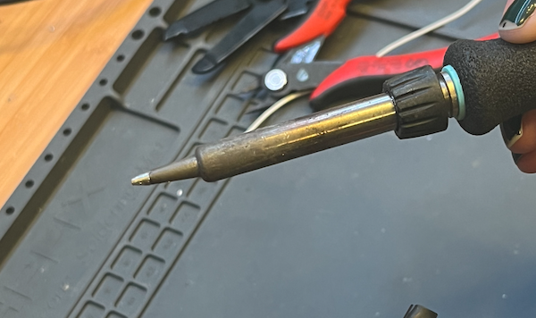While soldering a joint, I had to be careful because the liquid solder should only cover the exposed wire. Too much solder might appear bulbous when cooled or might also cover the adjacent hole. In order to remove the extra solder, I used the wick and the solder-sucker tool.
Next, I soldered the other end of the wire to the protoboard. For each of the three wires, I picked a hole 3-4 holes away from the first soldered joint.
After completing all 6 wire solder joints, I found that I had an easier time soldering with the solid core wire than the stranded core because the stranded core had to be twister to be able to fit it through the protoboard holes, and I found that to be slightly tedious.
Below you can view my solder joints that I created, in the two pictures these are two different protoboards. Together, this equals six different soldered joints.
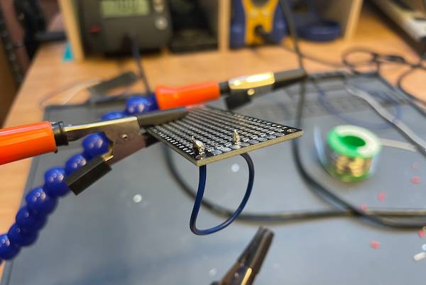 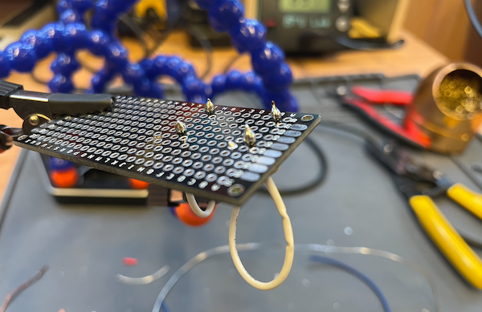Part 3: Bridge of Solder
In this third part of the lab, I had to create three different trace bridges to join the six different soldered wire joints that I created in the previous part. A solder bridge is when we connect two adjacent holes on a protoboard using solder. A series of bridges is called a trace, we can connect any two holes on the protoboard. Traces are helpful to create clean circuits that do not have extra wires hanging out.
In order to create my bridges, I first applied solder on two adjacent holes in the protoboard, and then adding more solder to create a full bridge. Creating more than one bridge connections in a row creates a trace.
Below you can see my successful traces that I created for part 3.
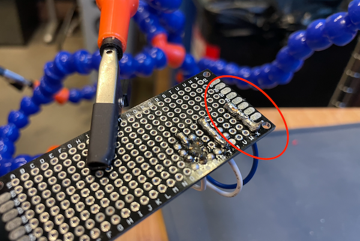 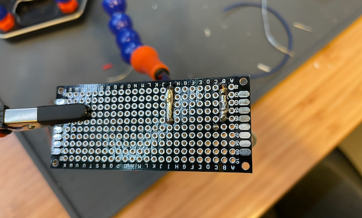Part 4: Splicing Wires
For the fourth part of this lab, I had to practice wire splicing. Splicing wires is to add solder to different segments of wire to combine them to create a longer wire. In order to splice a wire, the steps are to first strip the ends of the wires that you are soldering together with the wire strippers. This is to remove the insulation so that only the metal wire is showing at the ends, and this is where you will add the solder. The second step is to hold the individual pieces upright (you can have someone else help for another set of hands), and apply solder to the exposed metal in the wires. Third, I positioned the two wires so that the two exposed ends with solder are barely touching each other. Next, I held them steady while touching the point of contact with the soldering iron such that the solder melts on both wires and combines to form a bigger blob of solder. Once you see that the solder blob mostly covers the junction of the two wires, move the solder away and hold the wires steady until the solder completely solidifies.
Below, you can see the images of my final soldered spliced wire.
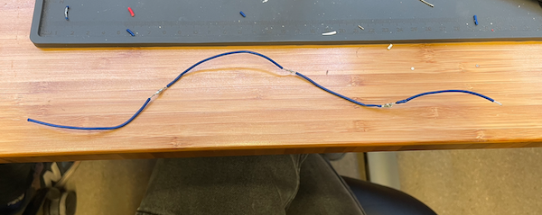 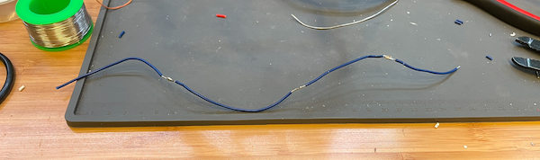Extra Volt
For the extra volt portion of my lab, I needed to use the soldering skills I learned to create a functional circuit on my protoboard. For this Extra Volt, I soldered an LED + resistor circuit onto the protoboard to turn the LED on using the Arduino. I chose an appropriate 100 ohm resistor.
One extra component I used is a pin header. A male pin header can be soldered onto the protoboard like other components, and once soldered, it allows jumper wires to be plugged onto the protoboard from the Arduino. Using the pin header, I connected the digital and ground pins from the Arduino to the LED circuit on the protoboard.
Below are images and videos of this final working circuit, with the external LED blinking using the built-in Arduino example code "Blink".
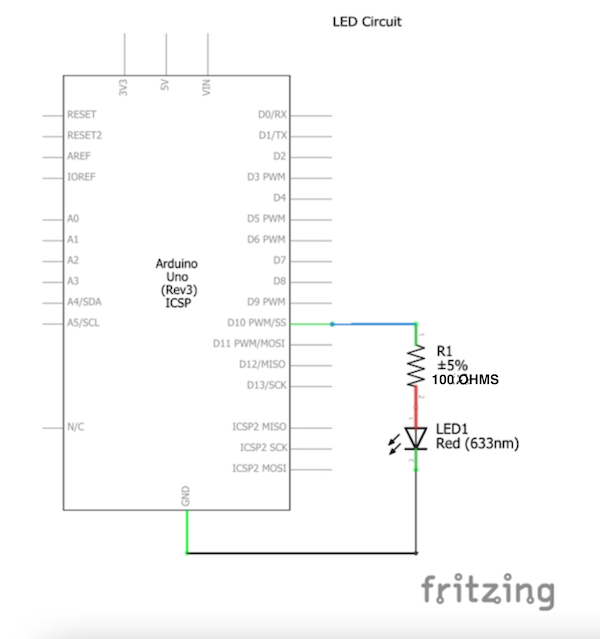 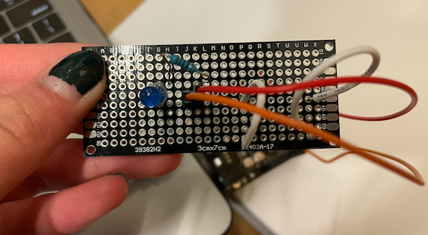 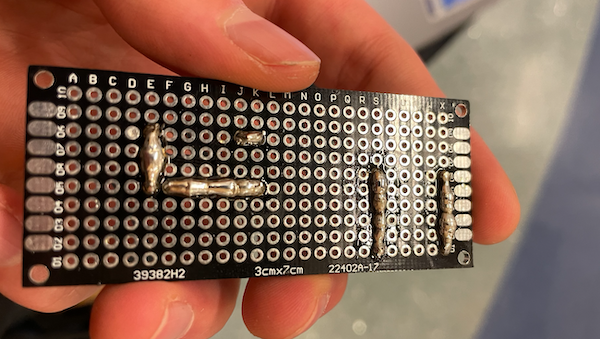 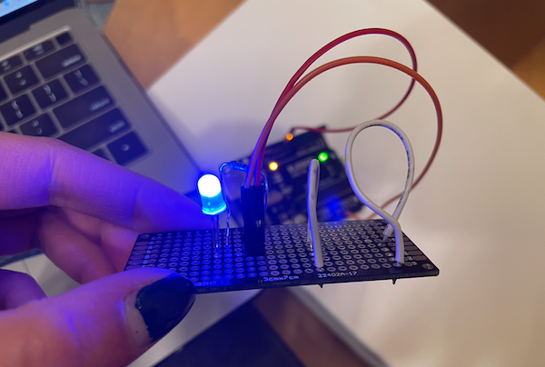Conclusion and Reflection
In conclusion, I thought that this lab was the perfect introduction for me to learn how to solder. My favorite part of the lab was learning how to brige, and I am especially proud of being able to complete the extra volt and soldering my first circuit.